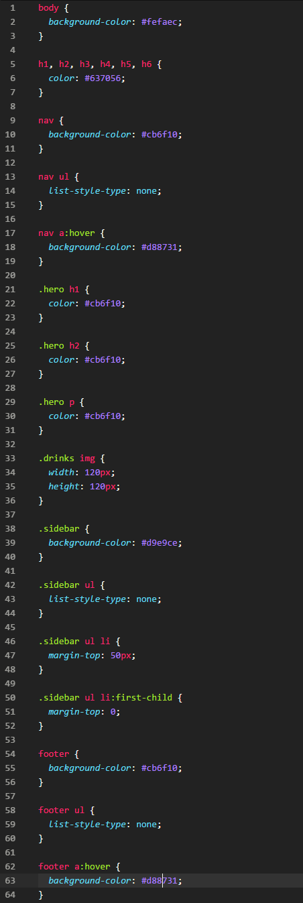

Expand this section to compare your work.
You can also compare your styles.css file with our answer key if the image is too difficult to read.
CSS allows you to be as generic or as specific as you want. In this section we will learn how to apply styles to multiple selectors and work with special selectors.
This section will help guide you through the following steps:
Setting a style on multiple selectors at once makes CSS succinct. In this section you'll set a default color for all header text.
We have the same color defined for 2 header selectors, h1 and h2. We can combine the selectors into a selector list. Delete the style for h2.
Combine the h1 and h2 selectors by separating them with a comma like this
styles.css
h1, h2 {
color: #637056;
}
Define a style for more than 1 selector by comma separating the selector list.
Save and refresh your page. Do you see your default color applied?
Let's go ahead and set the text color for all headers. Add h3, h4, h5, and h6 to the style. Save and refresh your page to see the color applied to all the headers on the page.
There's one other place where we have the same style defined for 2 different selectors- nav and footer. Let's combine the styles.
footer and change the selector for nav style to nav, footer.
Providing user feedback on clickable elements such as hyperlinks is thoughtful user interaction. You'll set a hover color, style lists, and practice CSS organization.
Select a color that displays when your mouse hovers over the hyperlink tags in your navigation bar and footer.
Between the styles for the img and .small-plates, create a style for a elements. Add the background-color property. The background color for all a elements changed. Hrm....
We want the background to show on hover, so we can use the Pseudo Class :hover. Change the selector to a:hover.
Save your file and view in Chrome. What happens when you hover over the links in the navigation bar?

But we don't want all the a tags to hover. Just the ones in the navigation. We could add a class or we can target only the a elements in nav by changing the selector to nav a:hover.
You are using the Descendant combinator. A combinator is a special selector. The descendant combinator contains 2 or more selectors with a space between each selector. The first selector is an ancestor of the second in the HTML. Selectors can be HTML elements or classes. So in this case, you are saying
For all HTML
navelements that has a descendanta, add a color when hovering.
Read more about the Descendant combinator.
Group styles for the same parent element together to make it easier for yourself. Group all the nav style together, but order by specificity.
We'll work some more with list styling and add spacing between list elements.
We don't want the bullets for any lists. Remove the bullets for all ul by creating a global style and setting the list-style-type property to "none". Your code should look like this.
styles.css
ul {
list-style-type: none;
}
Save your file and view in Chrome. The webpage is starting to look better.
Learn more about styling lists using MDN list styling reference.
We want to add extra space between each list item in the "Small plates" menu by setting the margin-top property to "50px" on the list items. Create a style targeting li with parent class="small-plates".
li with parent selector .sidebar. We can use the Descendant combinator.
Declare a style for .small-plates li at the bottom of the file and add margin-top: 50px;.
Let's also add a right and left margin to each list item in the "Small plates" menu. Set the values to 15px; Can you guess the property names of the right and left margins?
Save your file and view in Chrome. You now have plenty of spacing between each food menu item but the margin-top property also added space between the "Small plates" header and list. Let's take care of that extra space next.
After the .small-plates li style, create another style with the same selector. Since we are overriding the previous style we define it after the original style. We'll add a qualifier to the selector next.
In the second definition of the style, add the Pseudo Class first-child and define the margin-top property using the value "0". We are overriding the previous style selectively for the first child, or the first element of the list. Your code should look like this
styles.css
.small-plates li:first-child {
margin-top: 0;
}
Save your file and refresh the page. The spacing looks better now.
You can also use combinators to declare a property on all li except the first in one fell swoop. Instead of having a style for all list items and overriding the first child, you could have written
.small-plates li+li {
margin-top: 50px;
}
The + is the Adjacent Sibiling combinator and selects li elements directly after the first one. So in this case, you are saying
For all HTML elements with the class
.small-plates, apply a top margin tolitags that have a precedinglitag.
Read more about the Adjacent sibling combinator.
Compare your styles.css against the answer key for your work so far. It might look a little different depending on the color palette you chose.
You can also compare your styles.css file with our answer key if the image is too difficult to read.